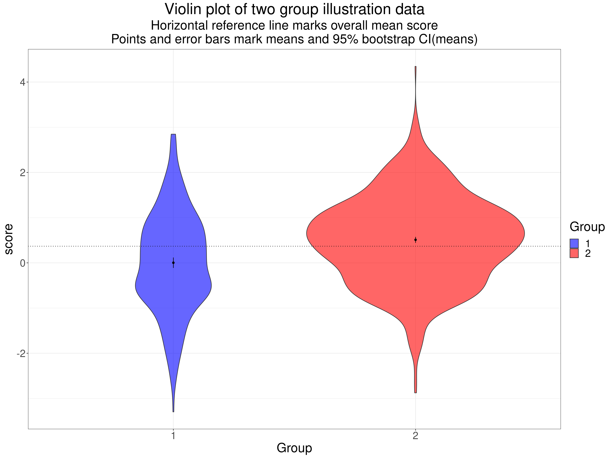
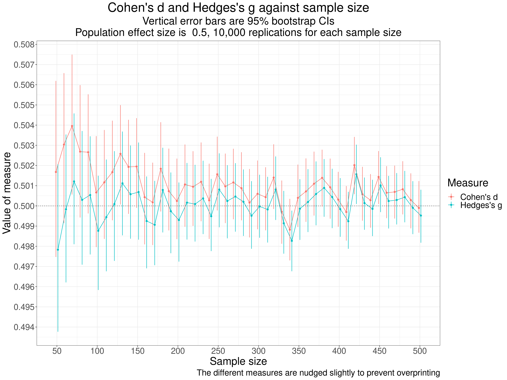

This all started when I told a co-author, completely wrongly, that Hedgess g only applied for between groups effect estimation: wrong! g corrects for bias in d: the tendency for d to overestimate population effect size particularly at smaller sample sizes. Thats true whether the d is a between groups d or a within subjects d (though there are several ways of getting d for within subjects effects, I was going to put that in here but this got big enough and I will put those issues in another blog post later).
Clearly g can be seen as a correction to d, or as an alternative effect size measure. In the psychological literature that I see its usually described as a different effect size measure to Cohens d.Thats perfectly fine but I think its useful to explain that g comes into being as a correction to d as d is easily understood whereas the formula for g is scary (though theres an approximation to it which is very good for any reasonable n but thats not really important now that computer power is so remarkable.)
This breaks into three parts here:
What is Cohens d?
The relationship between Hedgess g and Cohens d (including approximations and, unusually, a mistake in Wikipedia).
Showing that Cohens d does overestimate a population effect size.
Footnotes:
the differences between d and g are small at reasonable sample sizes.
all this is based on the Gaussian population model and there is a parametric confidence interval calculation for g but if you have raw data bootstrapping it is surely better. I may add something on this later.
What is Cohens d?
There are lots of good explanations of this around the internet but putting it simply, and for a two group, between group comparison it is simply the difference in the means for the two groups divided by the common standard deviation. This is a very general idea about effect sizes: a effect, here the mean difference, is scaled in terms of a standard deviation.
As an equation that this:
\[ d = \frac{mean_{1} - mean_{2}}{SD_{common}} \]
and the common SD is the weighted average of the SDs. Actually, its slightly more complicated than that, it is:
\[ SD_{common} = \sqrt{\frac{(n_{1}-1)SD_{1}^{2} + (n_{2}-1)SD_{2}^{2}}{n_{1} + n_{2} - 2}} \]
and that collapses to this if the two groups are of the same size:
\[ SD_{common} = \sqrt{\frac{SD_{1}^{2} + SD_{2}^{2}}{2}} \]
i.e.the common standard deviation is the square root of the mean of the two variances.
What does this mean? Heres an example of scores from two datasets, one n = 350, the other n = 900.
Show code
effectSize <- .5
sampSizes <- c(350, 900)
set.seed(1234)
tibble(group = 1:2) %>% # grouping variable
mutate(sampSize = if_else(group == 1, sampSizes[1], sampSizes[2])) %>%
rowwise() %>%
mutate(obsID = list(1:sampSize)) %>%
unnest(obsID) %>%
group_by(group) %>%
sim_discr(n_vars = 1, var = 1, cov = 0, group_means = c(0, effectSize), name = "score") %>%
ungroup() %>%
mutate(facGroup = factor(group)) %>%
rename(score = score_1) -> tibIllustration1
tibIllustration1 %>%
group_by(facGroup) %>%
reframe(n = n(),
CI = list(getBootCImean(score)),
sd = sd(score)) %>%
unnest_wider(CI) -> tibStats
vecColours <- c("1" = "blue", "2" = "red")
ggplot(data = tibIllustration1,
aes(x = score, group = facGroup, fill = facGroup)) +
geom_histogram(alpha = .6) +
geom_vline(data = tibStats,
aes(xintercept = obsmean,
colour = facGroup)) +
scale_color_manual("Group",
values = vecColours) +
scale_fill_manual("Group",
values = vecColours) +
ggtitle("Histogram of two group illustration data",
subtitle = "Vertical lines mark group mean scores")
Heres the same data as a violin plot with the means marked again.
Show code
tibIllustration1 %>%
summarise(mean = mean(score)) %>%
pull() -> tmpMean
ggplot(data = tibIllustration1,
aes(x = facGroup, y = score, group = facGroup, fill = facGroup)) +
geom_violin(scale = "count",
alpha = .6) +
geom_hline(yintercept = tmpMean,
linetype = 3) +
geom_linerange(data = tibStats,
inherit.aes = FALSE,
aes(x = facGroup, ymin = LCLmean, ymax = UCLmean)) +
geom_point(data = tibStats,
inherit.aes = FALSE,
aes(x = facGroup, y = obsmean)) +
xlab("Group") +
scale_fill_manual("Group",
values = vecColours) +
ggtitle("Violin plot of two group illustration data",
subtitle = paste0("Horizontal reference line marks overall mean score",
"\nPoints and error bars mark means and 95% bootstrap CI(means)"))
The very tight 95% confidence intervals for the means there are clearly very separate: this is a hugely statistically significant difference. Here are the sample statistics.
Show code
facGroup | n | mean | sd |
|---|---|---|---|
1 | 350 | 0.003 | 1.082 |
2 | 900 | 0.510 | 0.965 |
Show code
getCommonSD <- function(SD1, SD2, n1, n2){
numerator <- (n1 - 1)*SD1^2 + (n2 - 1)* SD2^2
sqrt(numerator / (n1 + n2 - 2))
}
tibStats %>%
select(-c(LCLmean, UCLmean)) %>%
rename(group = facGroup) %>%
rename(mean = obsmean) %>%
pivot_wider(names_from = group, values_from = c(mean, sd, n)) %>%
rowwise() %>%
mutate(commonSD = getCommonSD(sd_1, sd_2, n_1, n_2),
CohenD = (mean_2 - mean_1) / commonSD,
HedgesG = hedges_g(CohenD, n_1 + n_2)) %>%
ungroup() -> tibResults
tibResults %>%
select(CohenD) %>%
pull() -> tmpCohenD
tibResults %>%
select(commonSD) %>%
pull() -> tmpCommonSD
tibIllustration1 %>%
summarise(SDall = sd(score)) %>%
pull() -> tmpSDallOf course were not interested in the statistical significance of the difference in means, what we want to know is the effect size. We can see that the SD for each group is pretty close to 1.0 (the population SDs as it happens). The common SD is 0.999. This is not the SD if we pool across all the data from the two groups, thats quite a bit higher at 1.024 because of the mean difference between the groups contributing to the SD across all the data.
The difference between the means is 0.508 so Cohens d is this divided by the common SD, its 0.508.
I hope that gives a sense of Cohens d and why its a not unreasonable measure of effect size. Now we come to Hedgess g.
The relationship between Hedgess g and Cohens d
So the bottom line is that Hedgess g(Hedges, L. V. (1981). Distribution Theory for Glasss Estimator of Effect size and Related Estimators. Journal of Educational Statistics, 6(2), 107128. https://doi.org/10.3102/10769986006002107) is quite simply a correction to effect size measures, notably Cohens d, which have a standard deviation in the denominator of the equation. The correction is necessary because Cohens d from sample data is a biased estimate of population effect size. This is true whether the data are between group or within subject contrasts. The bias decreases with increasing sample size and with quite large n the difference is completely trivial.
This shows the relationship between g and d across a range of sample sizes for different observed d values.
Show code
tibble(n = 10:100,
d = list(seq(.4, .9, .1))) %>%
unnest_longer(d) %>%
mutate(g = hedges_g(d, n),
factorD = factor(d)) -> tibValues
tibValues %>%
select(d, factorD) %>%
unique() -> tibD
ggplot(data = tibValues,
aes(x = n, y = g, colour = factorD)) +
geom_point() +
geom_hline(data = tibD,
aes(yintercept = d, colour = factorD)) +
ylim(c(0, 1)) +
scale_x_continuous(breaks = seq(10, 100, 10)) +
ggtitle("Plot of Hedges's g against n for various values of Cohen's d",
subtitle = "Horizontal reference lines show d values")
Show code
# ggsave(filename = "HedgesG.png", width = 800, height = 600, units = "px")Thats showing the relationship for d values of .2, .3, .4, .5, .6, .7, .8 and .9. It can be seen that g is considerably below the d values for the smaller n, correcting for the positive bias in d.The curves of the values of g are converging on the value of d as n goes up and they would be identical as n reaches \(\infty\) (asymptotic I love that word!).
This is another way of seeing the relationship: plotting g against d for various values of n.
Show code
### just amusing myself really
# getPooledSD <- function(SD1, SD2, N1, N2) {
# numerator <- ((N1 - 1) * SD1^2) + ((N2 - 1) * SD2^2)
# # print(numerator)
# denominator <- (N1 + N2 - 2)
# # print(denominator)
# return(sqrt(numerator / denominator))
# }
# getPooledSD(5, 5, 76, 76)
# getPooledSD(5, 10, 76, 76)
tibValues %>%
# get only values of n that are multiples of 20
# filter(n %% 20 == 0) %>%
filter(n %in% c(20, 40, 100)) %>%
mutate(factorN = factor(n)) -> tibValues2
vecMyColours <- colorRampPalette(c("black", "red")) # generates a function
ggplot(data = tibValues2,
aes(x = d, y = g, colour = factorN, group = factorN)) +
geom_point() +
geom_line() +
geom_abline(intercept = 0, slope = 1,
linetype = 3) +
theme(aspect.ratio = 1) +
scale_x_continuous(limits = c(.38, .9),
oob = scales::squish) +
scale_y_continuous(limits = c(.38, .9),
oob = scales::squish) +
scale_color_manual(values = vecMyColours(3)) +
ggtitle("Plot of g against d for various n and d")
Thats showing, again, that g is always lower than the observed d, that the difference is smaller for larger n and is larger for larger d, looking pretty close to a straight line relationship.
You can get the gory details of the relationship in https://en.wikipedia.org/wiki/Effect_size#Hedges'_g. That tells us that the precise value of g for any d is a rather complex function (not, I think, fully explained in that wikipedia entry) and say that the relationship is approximately
\[ g \simeq \left(1 - \frac{3}{4\left(n_{1}+n_{2} - 9 \right)} \right)*d \]
Diversion as nothing is ever simple: The formula in Hedges, L. V. (1981). Distribution Theory for Glasss Estimator of Effect size and Related Estimators. Journal of Educational Statistics, 6(2), 107128. https://doi.org/10.3102/10769986006002107 is not quite the same:
\[ g \simeq \left(1 - \frac{3}{4\left(n_{1}+n_{2}) - 1 \right)} \right)*d \]
When I create little functions for both approximation and use the correct value of g from d (using esc::hedges_g(d, n)) I get this.
Show code
getWikipediaG <- function(d, n1, n2){
denom <- 4 * (n1 + n2 - 9)
d * (1 - (3 / denom))
}
getHedgesApproxG <- function(d, n){
denom <- 4 * n - 1
d * (1 - (3 / denom))
}
# getWikipediaG(.7, 76/2, 76/2)
# getHedgesApproxG(.7, 76)
# hedges_g(.7, 76)
tibValues %>%
mutate(WikiApproxG = getWikipediaG(d, n/2, n/2),
HedgesApproxG = getHedgesApproxG(d, n)) -> tibValues
tibValues %>%
select(d) %>%
unique() %>%
filter(row_number() %in% c(1, 3, 5)) %>%
pull() -> vecDs
tibValues %>%
# filter(d %in% c(.4, .7, .9)) %>%
# filter (d == .4 | d == .6 | d == .9)
filter(d %in% vecDs) %>%
rename(trueG = g) %>%
pivot_longer(cols = c(trueG, WikiApproxG, HedgesApproxG), names_to = "which") -> tmpTib
ggplot(data = tmpTib,
aes(x = n, y = value, group = which, colour = which)) +
facet_grid(rows = vars(d)) +
geom_point() +
geom_line() +
ggtitle("Facetted plot of g and approximations to g, against n",
subtitle = "(for d = .4, .6 and .8)")
Hm. Looks to me as if the formula that Hedges gave, which is actually simpler than the Wikipedia one, is clearly a better approximation. OK, I may end up being brave and editing the wikipedia entry.
Showing that d overestimates the population effect size
Show code
startTime <- proc.time()
effectSize <- .5
maxReps <- 10000
sampSizes <- 5:50 * 10
nSampSizes <- length(sampSizes)
set.seed(12345)
tibble(group = 1:2) %>% # grouping variable
mutate(sampSize = list(sampSizes), # generate sample sizes
repN = list(1:maxReps)) %>% # replications for each sample size
unnest_longer(sampSize) %>%
unnest_longer(repN) %>%
rowwise() %>%
mutate(obsID = list(1:sampSize)) %>%
unnest(obsID) %>%
group_by(group) %>%
sim_discr(n_vars = 1, var = 1, cov = 0, group_means = c(0, effectSize), name = "score") %>%
rename(score = score_1) %>%
pivot_wider(names_from = group, values_from = score, names_prefix = "scoreInGroup") %>%
# mutate(diff = scoreInGroup2 - scoreInGroup1) %>%
group_by(sampSize, repN) %>%
reframe(n = n(),
mean1 = mean(scoreInGroup1),
sd1 = sd(scoreInGroup1),
mean2 = mean(scoreInGroup2),
sd2 = sd(scoreInGroup2)) %>%
rowwise() %>%
mutate(commonSD = sqrt((sd1^2 + sd2^2) / 2),
CohenD = (mean2 - mean1) / commonSD,
HedgesG = hedges_g(CohenD, 2 * sampSize)) %>%
ungroup() -> tibResults
endTime <- proc.time()
elapsedTime <- endTime - startTime
# elapsedTimeWhat I have done is to generate 10^{4} samples of two equal sized groups with samples from 50 to 500 (in steps of 10) based on sampling from a population where the SD is 1 for both groups and the mean score of the first group is zero and for the other is 0.5, i.e.a population effect size of 0.5 for all samples. The population distributions are Gaussian (not vital for the effect size but makes simulation much easier than more realistic distributions).
Across all 10,000 replications at each sample size, i.e.a across a grand total of 460,000 simulated samples we see these summary statistics.
Show code
tibResults %>%
summarise(mean1 = mean(mean1),
mean2 = mean(mean2),
meanSD1 = mean(sd1),
meanSD2 = mean(sd2),
meanCohenD = mean(CohenD),
meanHedgesG = mean(HedgesG)) -> tibMeanStats
tibMeanStats %>%
pivot_longer(cols = everything()) %>%
flextable() %>%
colformat_double(digits = 4)name | value |
|---|---|
mean1 | -0.0000 |
mean2 | 0.5000 |
meanSD1 | 0.9986 |
meanSD2 | 0.9988 |
meanCohenD | 0.5010 |
meanHedgesG | 0.5000 |
That shows that the simulation is working well with the means and SDs very close to what we want (thanks to the sim_discr() function from the R package holodeck). Summarising across so many sample sizes, including so many quite large ones makes the difference between d and g look meaningless there but when we show it against sample size the issue is clear.
Show code
tibResults %>%
pivot_longer(cols = CohenD : HedgesG, names_to = "Measure") %>%
mutate(Measure = case_when(
Measure == "CohenD" ~ "Cohen's d",
Measure == "HedgesG" ~ "Hedges's g")) -> tibResultsLongShow code
suppressMessages(tibResultsLong %>%
group_by(sampSize, Measure) %>%
summarise(CI = list(getBootCImean(value))) %>%
unnest_wider(CI) %>%
ungroup() -> tibResCIs)Show code
valXdodge <- 5
ggplot(data = tibResCIs,
aes(x = sampSize, y = obsmean, colour = Measure, group = Measure)) +
geom_point(position = position_dodge2(width = valXdodge)) +
geom_line(position = position_dodge2(width = valXdodge)) +
geom_hline(yintercept = .5,
linetype = 3) +
geom_linerange(aes(ymin = LCLmean, ymax = UCLmean),
position = position_dodge2(width = valXdodge)) +
scale_x_continuous("Sample size",
breaks = seq(0, 500, 50)) +
scale_y_continuous("Value of measure",
breaks = seq(.49, .51, .001)) +
ggtitle("Cohen's d and Hedges's g against sample size",
subtitle = paste0("Vertical error bars are 95% bootstrap CIs",
"\nPopulation effect size is ",
effectSize,
", ",
prettyNum(maxReps, big.mark = ","),
" replications for each sample size")) +
labs(caption = "The different measures are nudged slightly to prevent overprinting")
That shows pretty clearly that d is overestimating the population effect size and much more so at the smaller sample sizes (per group sample sizes). One important thing to notice about this is that the differences between the two measures are very small (look at the values on the y axis).
Footnotes:
The differences between d and g are small at reasonable sample sizes
The differences between g and d are tiny for the sorts of dataset sizes we should be using if seeing ourselves as, at some level, estimating population effects. Given this, even ignoring the issue about distribution shape (next note), that I do wonder if using g rather than d hasnt had an element of virtue claiming rather than actually giving us more robust, accurate and replicable values when most MH/therapy datasets arent random samples from defined infinite populations and their means, SDs and even distribution shapes are likely to be considerably affected by realities of the construction of the datasets than true sampling vagaries. However, the fact remains that d overestimates population effect sizes and g doesnt so I think we should be using g but with humility! (See the position of humility in the excellent Wagenmakers, E.-J., Sarafoglou, A., Aarts, S., Albers, C., Algermissen, J., Bahnk, ., van Dongen, N., Hoekstra, R., Moreau, D., van Ravenzwaaij, D., Sluga, A., Stanke, F., Tendeiro, J., & Aczel, B. (2021). Seven steps toward more transparency in statistical practice. Nature Human Behaviour, 5(11), 14731480. https://doi.org/10.1038/s41562-021-01211-8.)
Gaussian models
All this is based on Gaussian population models and those also give us a parametric confidence interval calculation for g that only needs the value of g and the n. I may put a shiny app to give that which may occasionally be useful if you find you can only get access to those numbers, not the raw data, e.g.when wanting to compare your g with a value given in a paper. However, as our dat in the MH/therapy realm may be far from Gaussian you are probably better off using bootstrapping to get a CI around your observed g if you have raw data. I may add something on this later.